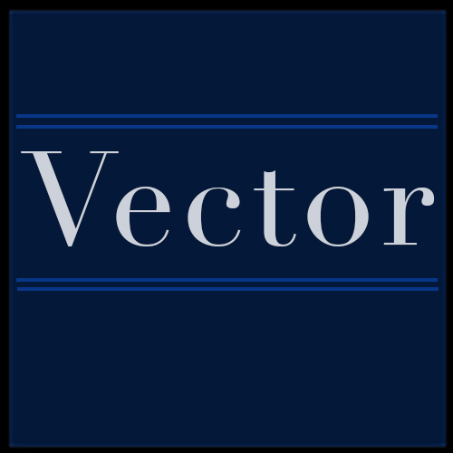
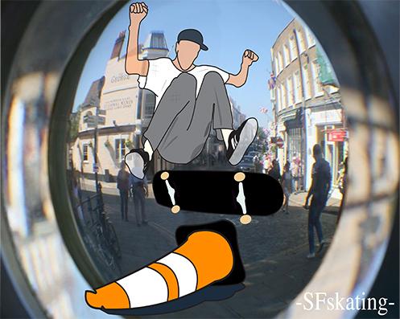

Home | Raster | Vector | Time Base Media | Print Layout | About me | Social Media |
Vector Design is known for the use of Points, Lines, and Curves! These Designs are made up of tools instead of Pixels. This form of deign is taken place in Adobe Illustrator!
For my project I also Decided I wanted to do something that means something to me. So the story Behind this project is a phot that was taken of me by a professional Photographer, This was my first big time photo in skateboarding! So I decided to Illustrate the photo by taking me and the obstacle and drawing it!